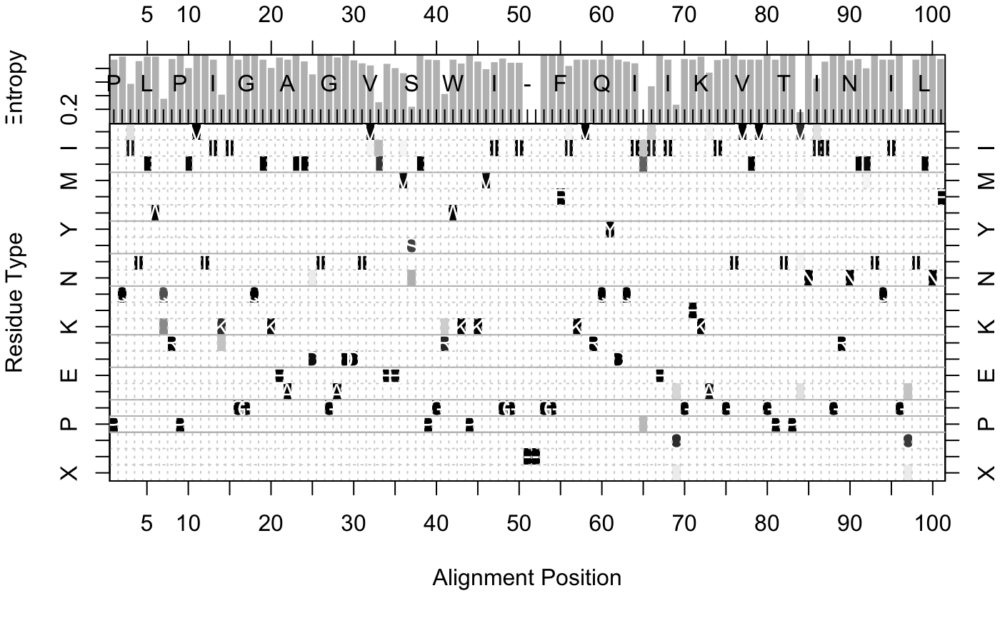

entropy.RdCalculate the sequence entropy score for every position in an alignment.
entropy(alignment)
| alignment | sequence alignment returned from
|
|---|
Shannon's information theoretic entropy (Shannon, 1948) is an often-used measure of residue diversity and hence residue conservation.
Returns a list with five components:
standard entropy score for a 22-letter alphabet.
entropy score for a 10-letter alphabet (see below).
normalized entropy score (for 22-letter alphabet), so that conserved (low entropy) columns (or positions) score 1, and diverse (high entropy) columns score 0.
normalized entropy score (for 10-letter alphabet), so that conserved (low entropy) columns score 1 and diverse (high entropy) columns score 0.
residue frequency matrix containing percent occurrence values for each residue type.
Grant, B.J. et al. (2006) Bioinformatics 22, 2695--2696.
Shannon (1948) The System Technical J. 27, 379--422.
Mirny and Shakhnovich (1999) J. Mol. Biol. 291, 177--196.
Barry Grant
In addition to the standard entropy score (based on a 22-letter
alphabet of the 20 standard amino-acids, plus a gap character ‘-’
and a mask character ‘X’), an entropy score, H.10, based on
a 10-letter alphabet is also returned.
For H.10, residues from the 22-letter alphabet are classified
into one of 10 types, loosely following the convention of Mirny and
Shakhnovich (1999):
Hydrophobic/Aliphatic [V,I,L,M],
Aromatic [F,W,Y],
Ser/Thr [S,T],
Polar [N,Q],
Positive [H,K,R],
Negative [D,E],
Tiny [A,G],
Proline [P],
Cysteine [C], and
Gaps [-,X].
The residue code ‘X’ is useful for handling non-standard aminoacids.
consensus, read.fasta
# Read HIV protease alignment aln <- read.fasta(system.file("examples/hivp_xray.fa",package="bio3d")) # Entropy and consensus h <- entropy(aln) con <- consensus(aln) names(h$H)=con$seq print(h$H)#> P Q I T L W Q #> 0.09227725 0.02393486 0.62933888 0.12466516 0.02393486 0.02393486 0.96209081 #> R P L V T I K #> 0.07686780 0.00000000 0.27975888 0.00000000 0.00000000 0.09227725 0.86959288 #> I G G Q L K E #> 0.00000000 0.09227725 0.00000000 0.00000000 0.09227725 0.27553960 0.04315583 #> A L L D T G A #> 0.09227725 0.00000000 0.13088164 0.41854739 0.00000000 0.00000000 0.04315583 #> D D T V L E E #> 0.00000000 0.10699510 0.17330174 0.22028327 1.03800101 0.18467696 0.27975888 #> M S L P G R W #> 0.39309794 1.13841259 0.00000000 0.09227725 0.10077052 0.85394134 0.09227725 #> K P K M I G G #> 0.17747686 0.00000000 0.13478305 0.30355500 0.14799610 0.06707466 0.16082302 #> I - - G G F I #> 0.16082302 0.04315583 0.04315583 0.00000000 0.00000000 0.00000000 0.23139803 #> K V R Q Y D Q #> 0.09227725 0.09227725 0.09227725 0.09227725 0.00000000 0.09227725 0.13535254 #> I - I E I C G #> 0.17330174 1.51410936 0.68264397 0.00000000 0.09227725 1.09295797 0.07686780 #> H K A I G T V #> 0.09227725 0.02393486 0.37975268 0.10077052 0.07686780 0.00000000 0.09227725 #> L V G P T P V #> 0.09227725 0.09227725 0.00000000 0.09227725 0.00000000 0.00000000 1.25743603 #> N I I G R N L #> 0.00000000 0.50872419 0.13535254 0.00000000 0.00000000 0.10699510 0.07686780 #> L T Q I G C T #> 0.28389290 0.00000000 0.09227725 0.09227725 0.00000000 1.19427669 0.09227725 #> L N F #> 0.00000000 0.00000000 0.07686780# Entropy for sub-alignment (positions 1 to 20) h.sub <- entropy(aln$ali[,1:20]) # Plot entropy and residue frequencies (excluding positions >=60 percent gaps) H <- h$H.norm H[ apply(h$freq[21:22,],2,sum)>=0.6 ] = 0 col <- mono.colors(32) aa <- rev(rownames(h$freq)) oldpar <- par(no.readonly=TRUE) layout(matrix(c(1,2),2,1,byrow = TRUE), widths = 7, heights = c(2, 8), respect = FALSE) # Plot 1: entropy par(mar = c(0, 4, 2, 2)) barplot(H, border="white", ylab = "Entropy", space=0, xlim=c(3.7, 97.3),yaxt="n" ) axis(side=2, at=c(0.2,0.4, 0.6, 0.8)) axis(side=3, at=(seq(0,length(con$seq),by=5)-0.5), labels=seq(0,length(con$seq),by=5)) box() # Plot2: residue frequencies par(mar = c(5, 4, 0, 2)) image(x=1:ncol(con$freq), y=1:nrow(con$freq), z=as.matrix(rev(as.data.frame(t(con$freq)))), col=col, yaxt="n", xaxt="n", xlab="Alignment Position", ylab="Residue Type")box()par(oldpar)